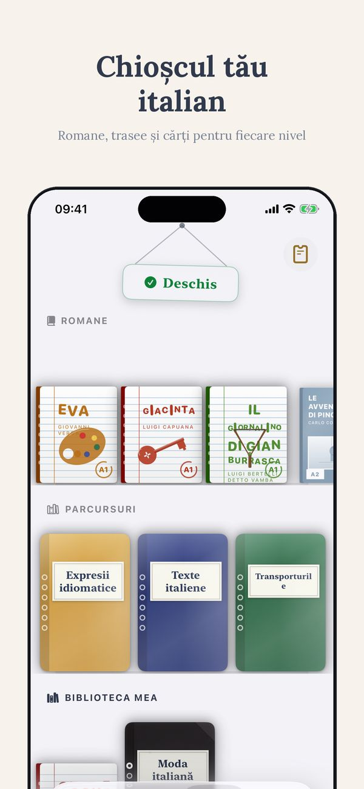
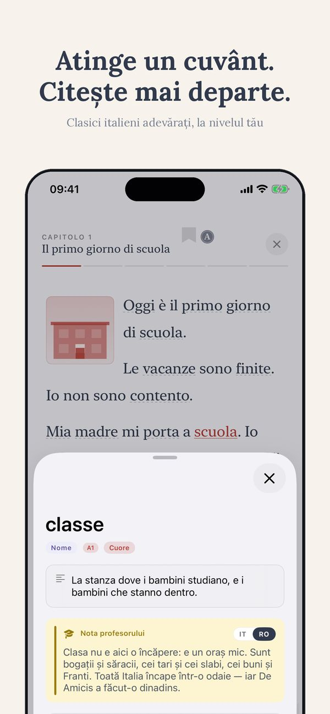
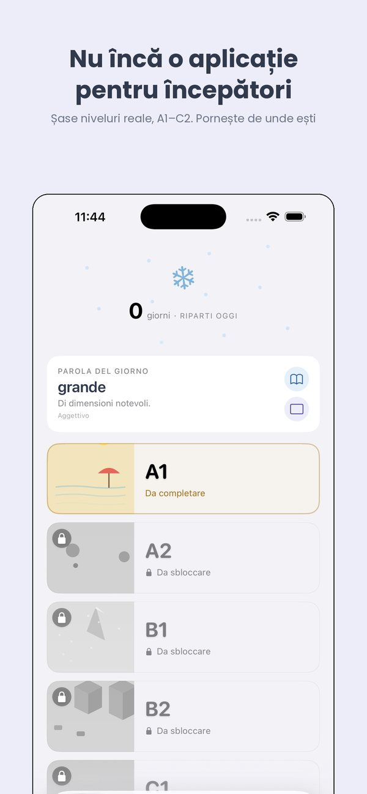
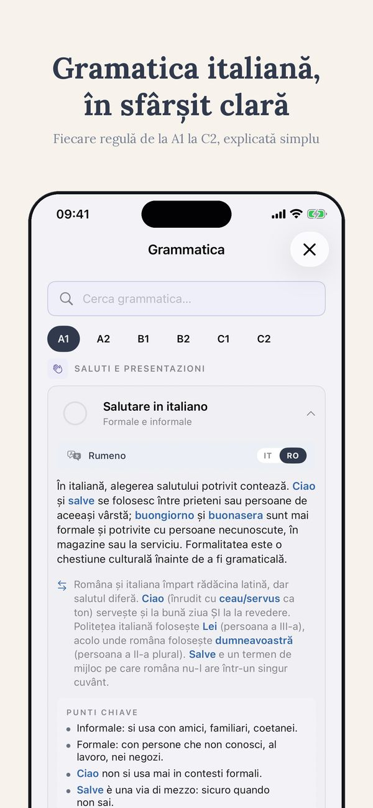
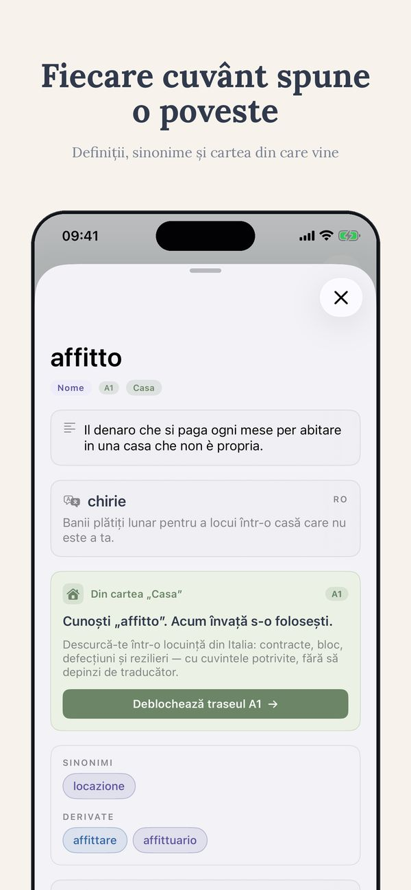
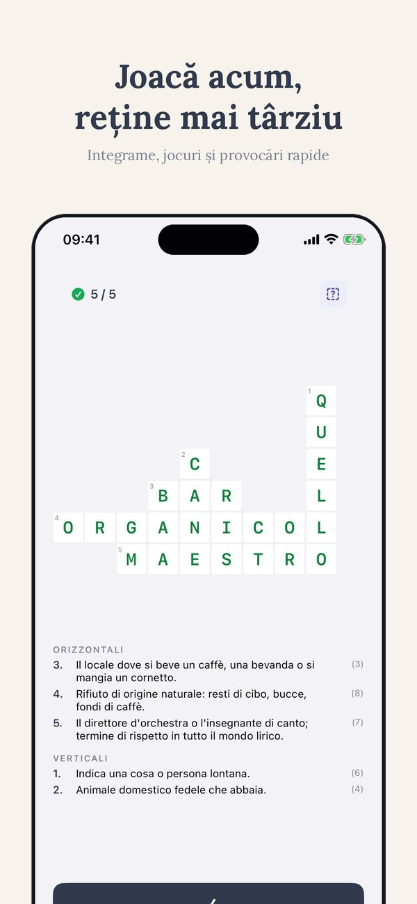

Pentru cine trăiește în Italia
Italiana la interviul de angajare
La interviu contează mai puțin gramatica și mai mult să înțelegi ce contract ți se oferă.
Cuvintele care îți trebuie
| il colloquio | interviul |
| il curriculum | CV-ul |
| il contratto a tempo determinato | contractul pe perioadă determinată |
| il contratto a tempo indeterminato | contractul pe perioadă nedeterminată |
| la busta paga | fluturașul de salariu |
| le ferie | concediul |
| la tredicesima | a treisprezecea salariu |
| il periodo di prova | perioada de probă |
| il preavviso | preavizul |
| il CUD | adeverința de venit |
Fraze de folosit așa cum sunt
- Ho visto il vostro annuncio.
- Che tipo di contratto e'?
- Qual e' l'orario di lavoro?
- Quando ricevo la busta paga?
De reținut
Diferența dintre determinat și nedeterminat schimbă totul: concediu, preaviz, acces la credit.
Ti






Jumătate din parcursul A1 este deschisă, fără înregistrare
Începe cu A1 ↗︎Mai multe de la Thuis Italiaans
Cărți gradate pe niveluri · Lecții de italiană online · Peste 700 de exerciții gratuite